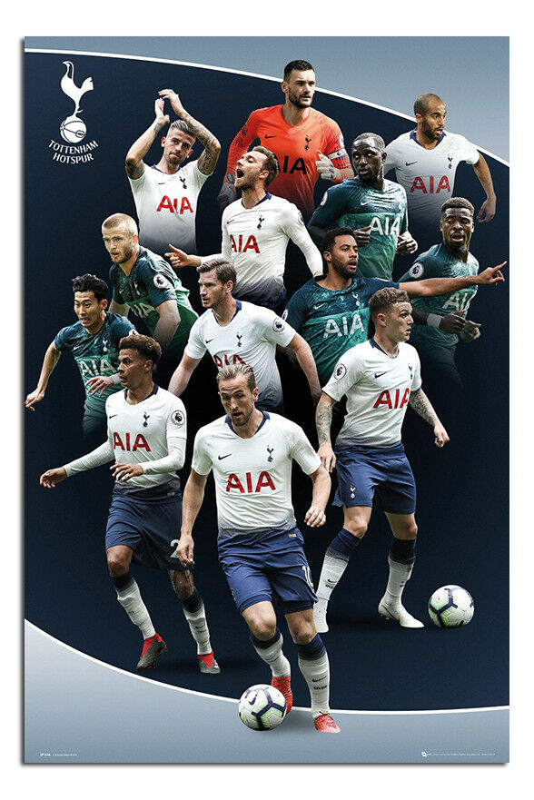

- Nom: Tottenham
- Année: 1882
- Tottenham Hotspur Football Club est un club anglais de football fondé en 1882
et basé à Londres. Il évolue en Premier League.
Le club est désigné généralement sous le nom de Tottenham ou des Spurs,
alors que ses propres supporters les appellent les Lilywhites en raison
de leurs maillots traditionnellement blancs. Le club de Tottenham est basé
dans le nord de Londres et évolue depuis avril 2019 dans le Tottenham Hotspur
Stadium, qui contient plus de 62 000 places. Leur ancien stade, White Hart Lane,
construit en 1899, fut démoli en 2017 pour la construction du nouveau stade.